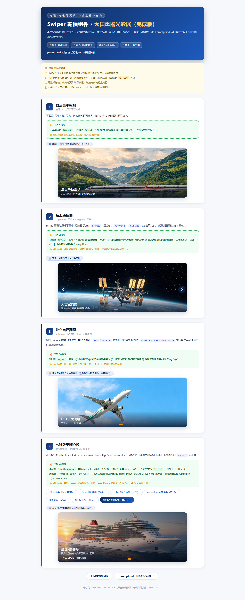

prompt.md · 我与 Codex 完成项目的真实对话
以下直接显示本项目的 prompt.md；用户原话和已展示的 Codex 回复按时间整理。
这里展示的是实际用户提示词与 Codex 回复，不把 AI 自拟提示词、内部练习或答辩笔记伪装成你的原话。需要 Markdown 原文时可直接打开上方文件。
真实项目对话
正在载入 prompt.md。
验证截图与一句话结论

证据说明 · 轮播自动化验收明细 · 老师要求逐项核对 · 技术学习笔记（非对话原文） · 历史执行日志
浏览器自动化截图只证明页面和配置状态，不证明学生本人已完成两轮提问、现场操作或答辩。